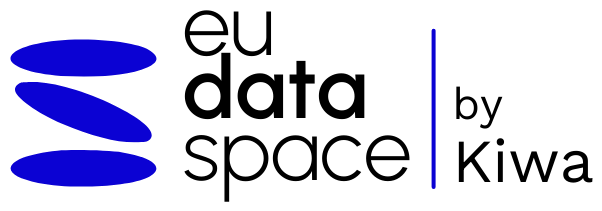

Cada área produce información fiable por separado. Nadie tiene la imagen completa. Y cuando llega una auditoría, una memoria anual o una solicitud de certificación, alguien reconstruye a mano lo que el sistema ya sabía.
Cada memoria, cada auditoría y cada certificación empieza recopilando lo mismo desde cero.
Garantías de origen, créditos de carbono y circularidad de nutrientes exigen evidencias que no se pueden construir a tiempo.
El incumplimiento se detecta después de aplicar, cuando ya no tiene arreglo.
Un mismo recorrido para todos los casos de uso. Empiezas por donde más te urge y avanzas a tu ritmo.
{{ p.desc }}
Los tres primeros pasos ocurren dentro del espacio de datos. Los dos últimos los sostiene Kiwa España como tercera parte independiente: asistencia técnica, compliance normativo y certificación acreditada. Kiwa no participa en el desarrollo del espacio de datos, y esa separación es lo que da validez al certificado.
Un espacio de datos es un ecosistema donde varios actores —productor de residuo, transportista, planta, gasista y certificador— comparten información bajo reglas explícitas, sin que ninguno pierda el control de lo suyo. brainrecycle® es el espacio de datos soberano de Hispania Silva para el sector del biometano.
Subes tus datos y pasan a estar en el sistema de otro.
Tus datos siguen siendo tuyos y tú decides, dato a dato, quién accede y para qué.
{{ p.body }}
Cada caso de uso resuelve una necesidad concreta de la planta. Todos reutilizan la misma trazabilidad, evitando duplicar integraciones y evidencias.
{{ r.desc }}
{{ p.desc }}
Tus datos permanecen en tus sistemas. Solo se comparten cuando existe una autorización expresa, con condiciones que tú defines y un registro trazable de cada operación.
{{ pilarActual.body }}
{{ g.body }}
Cuéntanos cómo es tu planta y qué caso de uso te interesa. Te damos credenciales para el panel de demostración y concertamos una sesión para enseñártelo.
Te escribimos en menos de 48 horas con las credenciales de la demo y una propuesta de fecha para la sesión.